Cyprus
塞浦路斯
24-29 May 2026
Photo 1.
Our flight landed in Larnaca, followed by a two-and-a-half-hour drive to Paphos. After resting for the night, we visited the Tombs of the Kings the next day. Only after entering the site did we learn that it was not the burial place of any king, but a necropolis for aristocrats and officials of the Hellenistic and Roman periods. This photograph was taken inside one of the tombs, where the Doric columns, atrium, and colonnaded courtyard reveal the influence of classical Greek and Roman architecture.
飞机在拉纳卡落地，驱车两小时半到达帕福斯。休整一晚后，第二天前往国王陵墓遗迹。进入遗迹内部才知道，此处并不是某位国王的陵墓，而是希腊和罗马时期贵族与官员的墓葬群。从多立克柱、中庭和柱廊庭院的布局中，可以看出希腊和罗马时期的古典建筑风格。
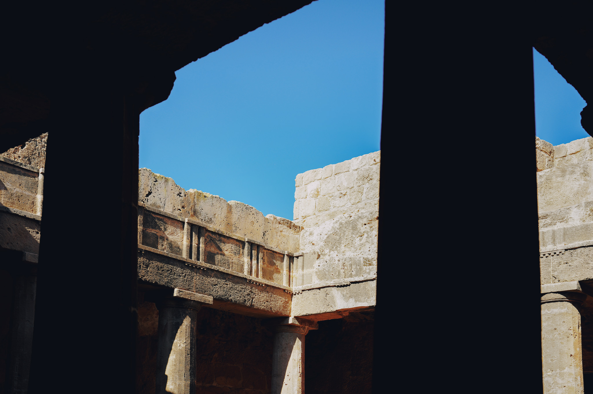

Photo 2.
The Tombs of the Kings occupy a rocky plateau beside the coast. Walking to higher ground, we found many small stone cairns facing the sea.
国王陵墓遗迹位于濒临海岸的一处岩质高地。步行至高处，发现许多矮石堆与海相望。
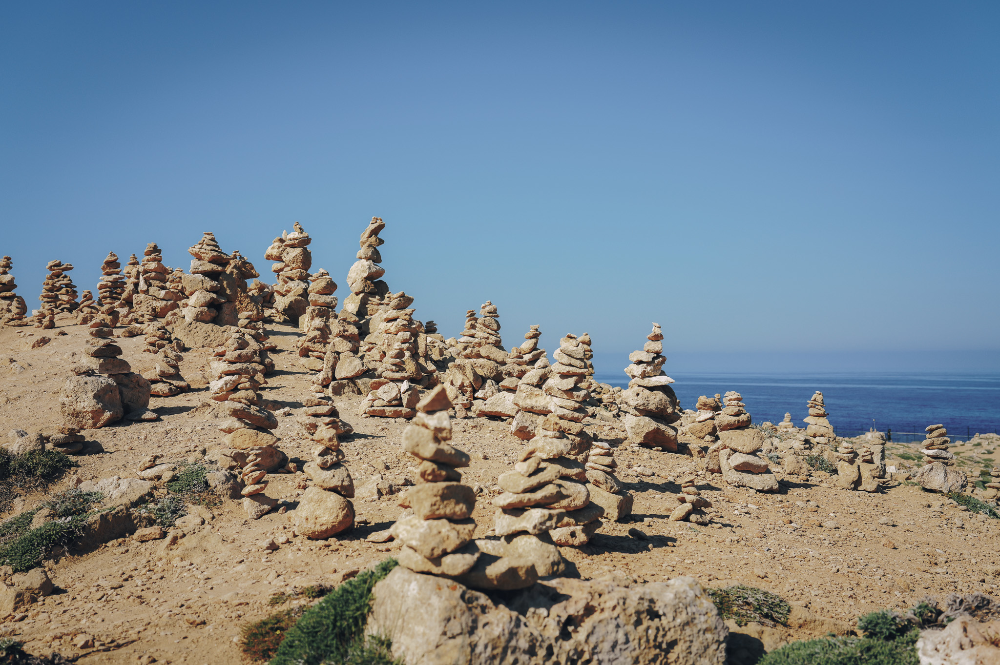

Photo 3.
On the afternoon of the third day, we visited Saint Neophytos Monastery, about a thirty-minute drive from central Paphos. The monastery rests in a quiet clearing among the hills. We explored its austere Orthodox church, met a devout elderly priest, and observed a religious ceremony. At the centre of the monastery, a cloister surrounds a large garden whose abundant greenery deepens the sense of tranquillity.
第三天下午来到圣尼欧菲托斯修道院，距离帕福斯市区约三十分钟车程。修道院坐落在山间一处幽静的开阔地。我们参观了古朴庄重的东正教教堂，见到了虔诚的老教士，也旁观了宗教礼仪。修道院中央是一条环绕大花园的回廊，繁茂的植物更衬托出这里的宁静。
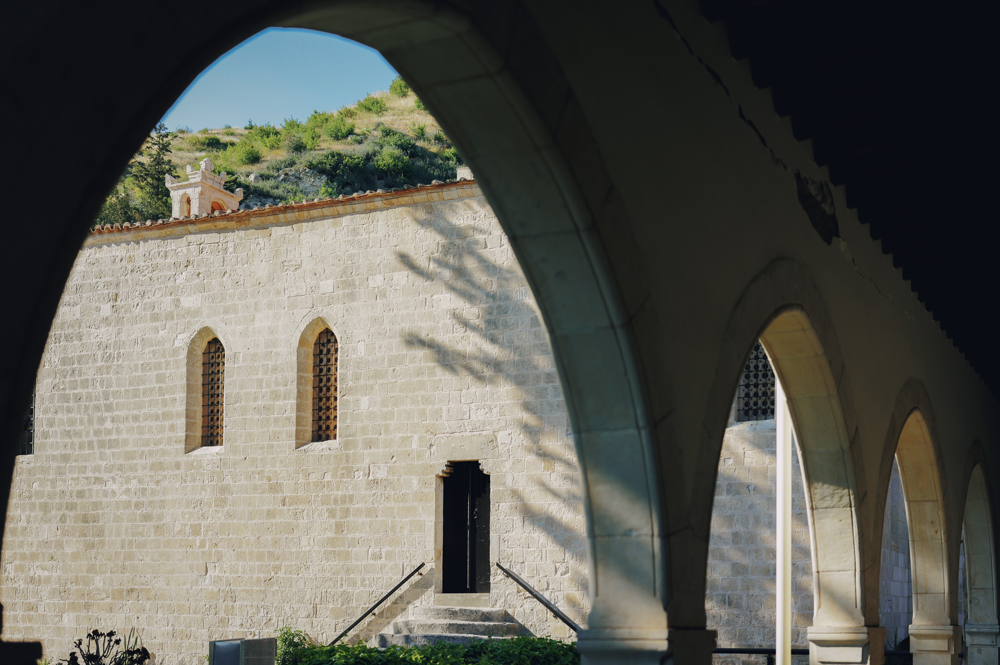

Photo 4.
The lush garden at the centre of the cloister brings life to the monastery's profound stillness.
回廊中央的花园草木繁茂，为静谧的修道院增添了生机。
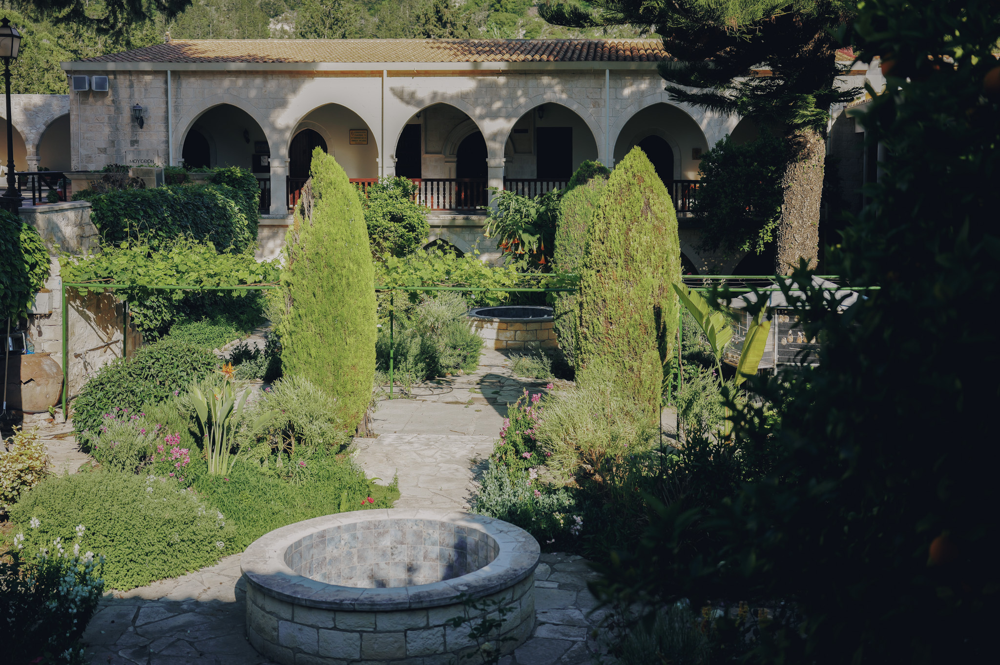

Photo 5.
On the fourth morning, we drove to a small winery northwest of Paphos. Set in a quiet, rustic mountain village, the winery offered several bottles that we bought as gifts.
第四天上午驱车来到帕福斯西北部的一座小酒庄。酒庄位于宁静质朴的山村里，我们购买了几瓶葡萄酒作为礼物。
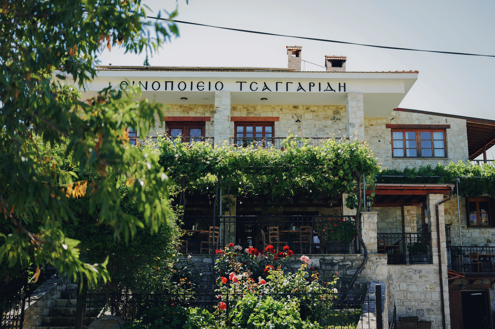

Photo 6.
Leaving the winery village, we continued to the beach at Aphrodite's Rock. According to Hesiod's Theogony, Aphrodite—the goddess of love and beauty and the Greek precursor to Venus—was born from the sea foam off the coast of Paphos. A tunnel leads from the car park to the beach; this photograph was taken at its exit.
从酒庄村落出发，我们前往爱神岩海滩。根据古希腊诗人赫西俄德的《神谱》记载，爱与美之神、维纳斯的原型——阿芙罗狄蒂（Aphrodite）诞生于塞浦路斯帕福斯海岸旁的浪花与泡沫之中。从停车场前往海滩需要穿过一条地道，此图摄于地道出口。
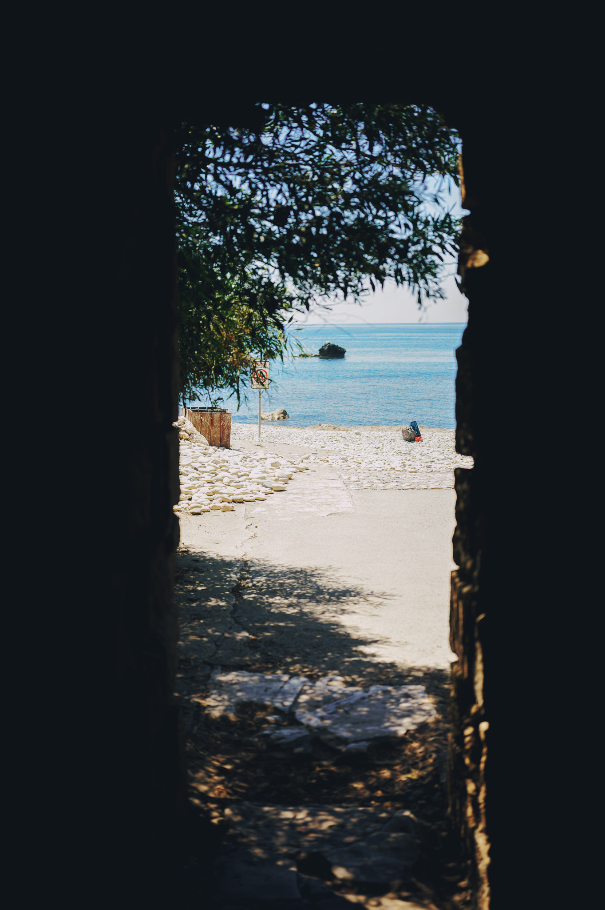

Photo 7.
A photograph with Aphrodite's Rock. I picked up a few stones beneath it as keepsakes.
和爱神岩合影。我在岩石下捡了几块石头留作纪念。
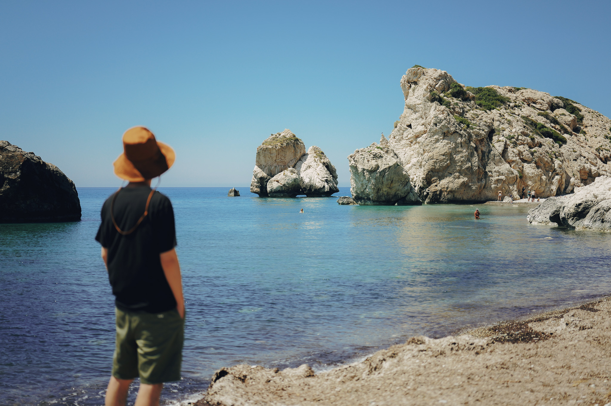

Photo 8.
Looking down from above at the deep blue Mediterranean water surrounding Aphrodite's Rock.
从高处俯视爱神岩海域湛蓝的海水。
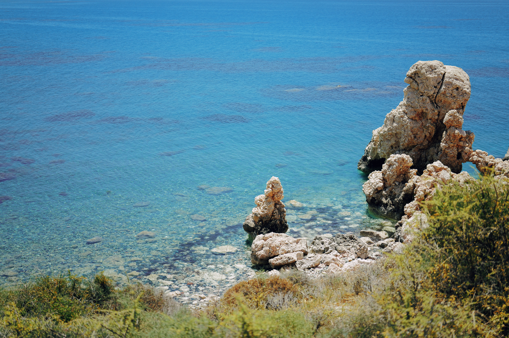

Photo 9.
On the fifth morning, we began our return journey with a stop in Omodos, a village in the Troodos Mountains. Known as one of Cyprus's celebrated wine-producing villages, Omodos is distinguished by its cobblestone streets, monastery, and traditional spirit, Zivania.
第五天上午开启返程之旅。我们先来到坐落于特罗多斯山区的 Omodos 村。这里是当地著名的葡萄酒产地，以鹅卵石街道、修道院及传统烈酒 Zivania 著称。
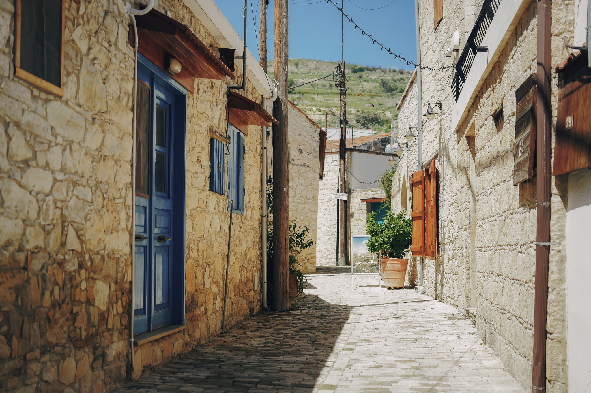

Photo 10.
From Omodos, we travelled to the Kourion Archaeological Site. Located on Cyprus's southwest coast, west of Limassol, this renowned Greco-Roman city is known for its dramatic seaside cliffs and magnificent ancient theatre. Standing in the theatre, my thoughts were carried by the sea breeze across thousands of years—a journey of the mind through time.
从 Omodos 村出发，我们前往库里翁考古遗址（Kourion Archaeological Site）。这座著名的古希腊罗马城邦遗迹位于塞浦路斯西南海岸、利马索尔西侧，以壮丽的临海悬崖风光和宏伟的古剧场闻名。驻足古剧场，思绪被海风带到千年前，开启一场跨越时空的精神之旅。
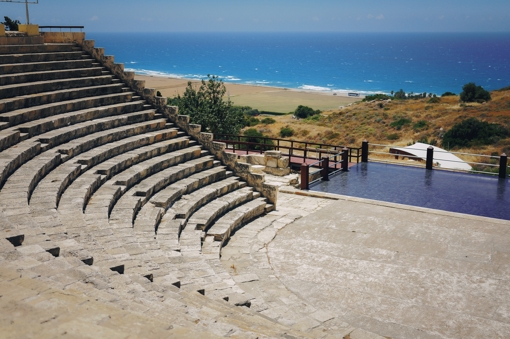

Photo 11.
Sitting on the ancient theatre's stone steps, looking out across the sea in quiet reflection.
坐在古剧场的石阶上遥望大海，沉思。
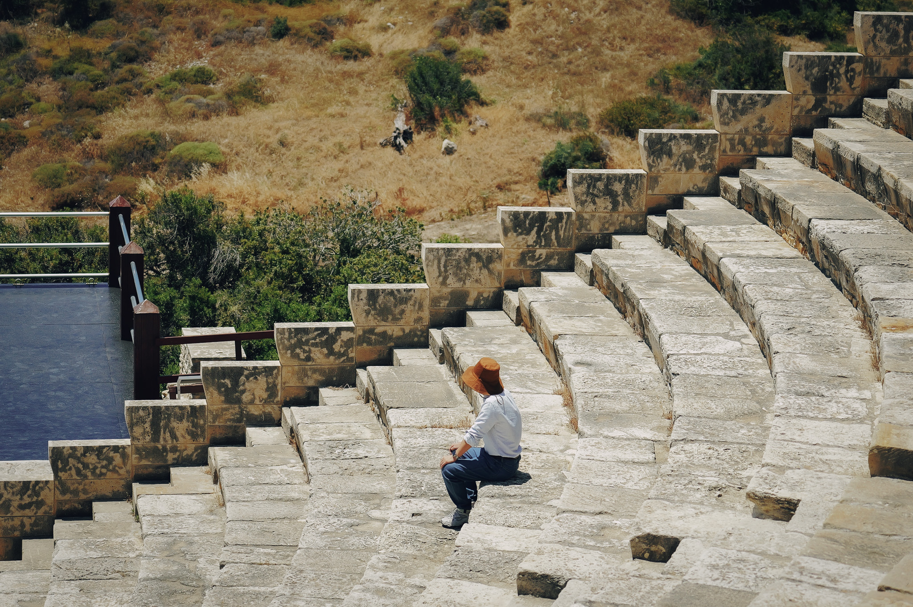

Afterword.
We returned to Shanghai the following afternoon. This journey through Cyprus introduced us to the landscapes, culture, and cuisine of the Mediterranean. On an island closer to Asia, we also witnessed how Greek and Roman culture had travelled, blended, and evolved across millennia. Receiving the AAMAS 2026 Best Demo Award added further significance to the trip.
我们于次日下午回到上海。此次前往塞浦路斯，体验了地中海的风光、人文和美食，也从这座更靠近亚洲的小岛上感受到跨越千年的希腊与罗马文化的传播、融合和演化。此外，我们还收获了 AAMAS 2026 最佳展示奖（Best Demo Award），为此次行程增添了额外的意义。